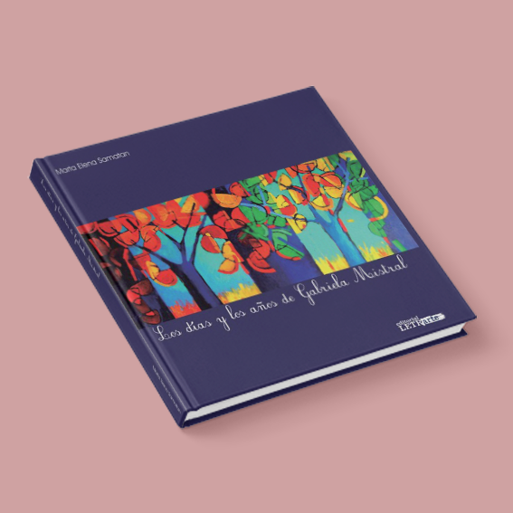

Los DÃas y los Años |
Los DÃas y los Años is a heartfelt biography of Gabriela Mistral, written by her close friend Marta Elena Samatan. The book includes personal letters and anecdotes, offering an intimate view of Mistral’s life, personality, and legacy.
Published by Editorial Letrarte, the design reflects Mistral’s connection to the Chilean landscape and her literary heritage, following the editorial aesthetic of the publishing house.
Design Process
- Conceptualization: Followed the Mistralian aesthetic, highlighting the organic beauty of Chilean landscapes and connecting readers to the poet’s world.
- Cover Design: Inspired by Mistral’s Elquina Valley, using soft earthy tones and organic textures to evoke her environment and emotional landscape.
- Typography & Layout: Balanced elegance and readability, enhancing the intimate nature of letters and anecdotes within the biography.
- Imagery & Visual Elements: Incorporated subtle illustrations of natural elements like hills, rivers, and flora to mirror Mistral’s connection with the land.
Results
- 🚀 Captured Gabriela Mistral’s life and connection to the land, reflecting the organic beauty of her homeland.
- 🚀 Conveyed the personal relationship between Marta Elena Samatan and Mistral, enhancing reader connection to the anecdotes.
- 🚀 Positive reception from critics and readers for the subtle yet powerful tribute in design.
- 🚀 Reinforced Editorial Letrarte’s reputation as a publisher dedicated to preserving Chilean cultural and literary heritage.

The design of Los DÃas y los Años intertwines Gabriela Mistral’s life with the landscapes that shaped her poetry, offering readers an immersive visual and emotional experience.
📌 More Info: @editorial_letrarte